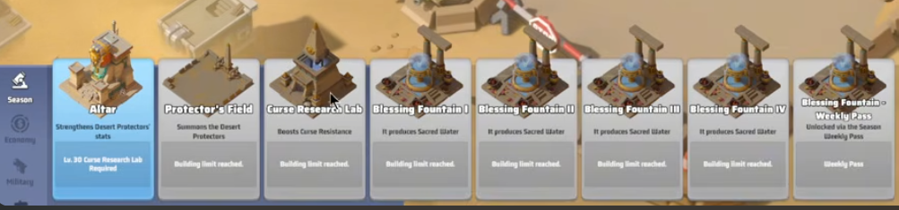
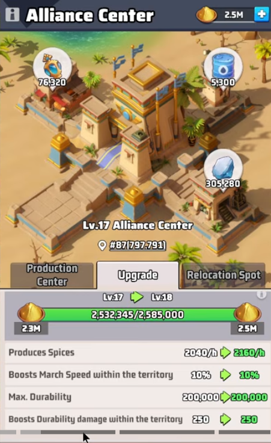
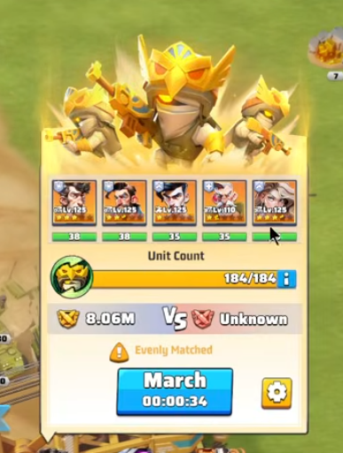
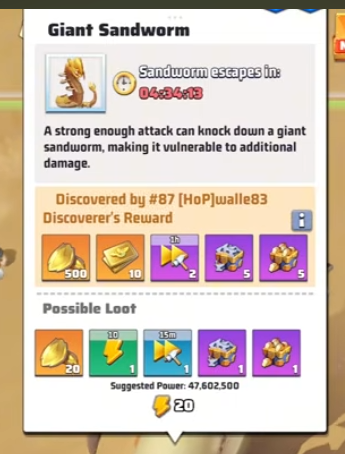
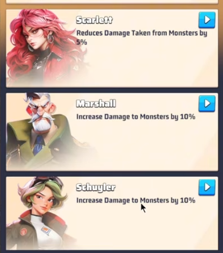
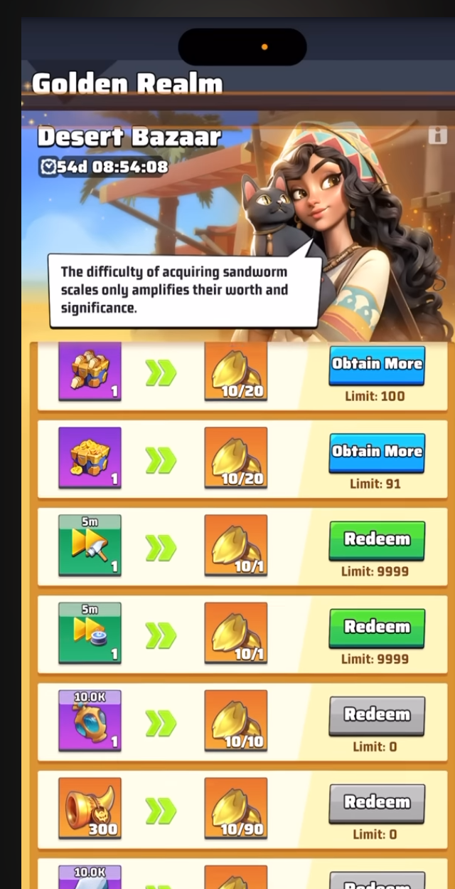
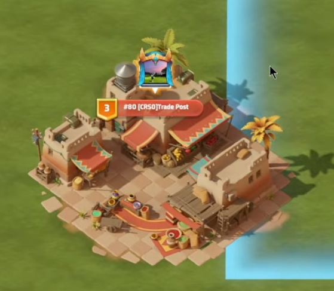
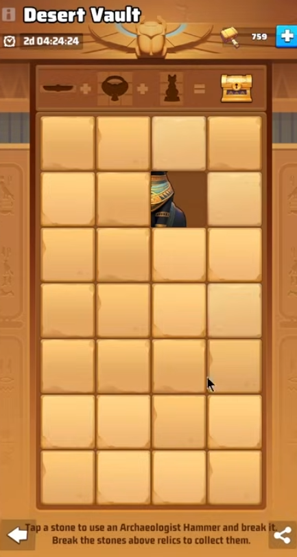

Early mega-guide: Curse Resistance, Spice & Mithril, Desert Protectors, Sandworms — built as S3 data lands
[RGBB] Server #2013
How to read this guide
This is an early, living guide assembled before/at S3 launch. Every claim is tagged by confidence:
CONFIRMED = seen in an in-game screenshot (Server #2013) or cross-checked across multiple guides;
RESEARCH = from community S3 guides, still wants in-game confirmation;
EARLY = from gameplay videos / single sources — likely, but verify.
No number is presented as fact without a tag. Send new screenshots and we'll promote items toward CONFIRMED.
1 · What's New vs Season 2
Season 3 keeps the S2 skeleton — a desert grid where cities are the ranked resource engine — but swaps the theme and adds a whole new territory layer. If you played S2, here's the delta.
Aspect
Season 2 (Polar Storm)
Season 3 (Golden Kingdom)
Theme
Frozen survival
Ancient-Egypt desert
Ranked resource
Rare Soil
Spice (cities are the main producer)
Survival stat
Heat / Coal
Curse Resistance (from Sacred Water) — not Virus Resistance
Siege target
Alliance Furnace
Alliance Center (durability 200,000)
New map layer
—
Greenification (convert desert → green)
New hazard
—
Sandworm Crisis
New units
—
Desert Protectors
Capture cap
6 cities + 4 digs (10)
8 cities + 8 strongholds (16)
Biggest strategic change
The cap jumps from 10 blocks to 16 (8 cities + 8 strongholds), and survival now runs on Curse Resistance instead of heat. Our S2 city-dominant crawl doctrine still applies — but the block math is different, and there's a second objective (greenification) layered on top of raw capture.
2 · Season Resources
Three seasonal resources. Only Spice is scored for ranking; Mithril and Sacred Water feed your seasonal buildings and survival.
Resource
Where it comes from
What it's for
Spice CONFIRMED
City production + Alliance Center
Primary ranking metric — the season is won on accumulated Spice
Leveling the Curse Research Lab → Curse Resistance
3 · The Golden Kingdom Map
A large desert grid. Cities carry thematic tier names (Village → Square of Judgement) instead of S2's Village/Factory/War Palace, but the level→production ladder is the same shape. The Great Pyramid is the center Capitol, unlocked last.
City tier
Level
Spice / hr
Notes
Village
1
100
—
Town
2–3
200 / 300
Confirmed in-game: Lv.2 = +200/h, Lv.3 = +300/h
Temple of the Sun
4
400
—
Ancient Tombs
5
500
—
Square of Judgement
6
600
Only 4 on the map — the top cities
Great Pyramid
Capitol
—
Map center, endgame objective
Digging Stronghold
1–6
Mithril: 100 / 120 / 140 / 160 / 180 / 200
+20 Mithril per level
City tier ladder confirmed against community guides; Lv.2/Lv.3 Spice confirmed in the in-game City List (below).
CONFIRMEDMax 8 cities and max 8 strongholds held per alliance (up to 16 blocks).
CONFIRMED2 city war declarations and 2 stronghold captures per day.
EARLY Strongholds are guarded by Mummy Guards / Golden Beasts in three combat types — Defender (tank), Striker (air), Annihilator (missile). Bring the counter squad (Aircraft > Tank > Missile > Aircraft still applies).
5 · Season Buildings
The buildings that drive the S3 progression loop. All confirmed from the in-game Season building menu.

In-game Season building menu.
Building
What it does
Notes
Curse Research Lab
Boosts Curse Resistance
Leveled by Sacred Water EARLY; max level 30
Blessing Fountain I–IV
Produce Sacred Water
A 5th tier unlocks via the Season Weekly Pass; leveled by Mithril EARLY
Protector's Field
Summons the Desert Protectors
See section 7
Altar
Strengthens Desert Protectors' stats
CONFIRMED requires Curse Research Lab Lv.30
Alliance Center
Produces Spice; buffs (march speed + durability) within its territory ring; the siege target
Max Durability 200,000; secondary unlocks (Mithril Plant, etc.) EARLY
Alliance Center = the S2 Furnace of Season 3
CONFIRMED Its buffs only apply within its territory ring — you must keep your base close to benefit, exactly like the S2 furnace. In-game at Lv.17 it produces 2,040 Spice/hr, gives +10% march speed and durability-damage bonuses inside the ring, and has Max Durability 200,000 (the number attackers grind to 0 to win a siege).

Alliance Center Lv.17 → Lv.18: Spice 2,040→2,160/h, +10% march speed, Max Durability 200,000.
6 · Curse Resistance
It's Curse Resistance, NOT Virus Resistance
S3's survival gate is Curse Resistance, leveled through the Curse Research Lab (fed by Sacred Water). Same shape as S2's Virus Resistance: if your resistance is below a monster's requirement, your damage drops sharply. Reach the required Curse Resistance before rallying elite zombies, stronghold guards, or sandworms.
CONFIRMED Curse Research Lab caps at Lv.30; the Altar unlocks at Lab Lv.30.
EARLY Exact reduction formula not yet confirmed for S3 — do not assume the S2 numbers until verified in-game.
7 · Desert Protectors
A new unit type summoned at the Protector's Field — powerful, but with a catch.
EARLY Desert Protectors are roughly 10× more powerful than normal troops.
EARLY They do NOT return from rallies — losses are permanent, so treat them as a consumable elite force.
EARLY You need to keep more than 1,000 Protectors to be able to launch a rally with them.
CONFIRMED The Meow-lody skin raises Protector's Field capacity by +500 (see section 11).
CONFIRMED The Altar strengthens Protector stats; the Eternal Pyramid deco adds +1% to Desert Protector conversion rate.
EARLYWhere they come from: when you lose troops in battle, a percentage convert into Desert Protectors — that "conversion rate" is exactly what the Eternal Pyramid's +1% boosts. You can switch a unit's type by tapping its soldier avatar.

Desert Protectors (the golden units) deployed in a march.
8 · Greenification
The new territory layer with no S2 equivalent: you convert desert tiles into green land to unlock map progression and the Capitol.
RESEARCH You can only greenify sand tiles adjacent to already-green tiles.
RESEARCH A region is complete at 80% greenification, which unlocks access to the next-level region.
RESEARCH Stage 1 (Weeks 1–4): greenification only starts after you capture a city; strongholds, trade posts, and the Capitol are locked. Stage 2 (Weeks 5–7): cross-warzone expansion toward the Great Pyramid.
RESEARCH You greenify by dispatching Recon Planes. Profession skills scale each dispatch — Double Greenification = 3×3 coverage, Nature's Touch = 9×9. Greenifying also reveals Desert Artifacts hidden under tiles (same action, two payoffs; up to 5 artifact rewards/day). Start right after your first city capture.
9 · Sandworm Crisis
A recurring desert hazard. Farmable for scales, but the big ones need a rally.

Giant Sandworm — knock it down to open it to extra damage. Suggested Power ~47.6M → rally-only.
CONFIRMED A strong enough attack knocks down a giant sandworm, making it vulnerable to additional damage.
CONFIRMED Giant Sandworm suggested power is ~47.6M and costs 20 stamina — i.e. a rally target, not solo.
CONFIRMED Sandworms drop Sandworm Scales — the currency for the Desert Bazaar (see §12). You earn them from the Sandworm Crisis daily tasks (deal damage / participate in a kill) and milestone goals.
EARLY Smaller sandworms can be soloed; large worms require rallies.
RESEARCH The Crisis event fills a gauge during Mummy / Doom-Elite fights; when full, a rally can summon a sandworm onto a random alliance member. Alliance Center territory protects against Giant Sandworm knockback.
10 · Heroes vs Monsters
Some heroes carry S3 monster-combat bonuses — useful for strongholds, sandworms and curse monsters. Confirmed from the in-game hero panel.

Hero
S3 monster bonus
Scarlett
−5% damage taken from monsters
Marshall
+10% damage to monsters
Schuyler
+10% damage to monsters
EARLY McGregor is also reported to carry a monster bonus — value not yet captured.
RESEARCH A Scarlett UR upgrade event runs in Week 3 (from Day 1), and a Schuyler Exclusive Weapon Pass opens Day 4 — plan hero resources around both.
11 · Cosmetics: Skin & Deco
Two S3 cosmetics that are more than cosmetic — the cat skin matters for Protectors.
Weekly reward track (also unlocks a 5th Blessing Fountain tier)
Desert Bazaar
Seasonal store — spend Sandworm Scales (see below)
Season Boost
Season-long boost track EARLY
🏪 Desert Bazaar — spend your Sandworm Scales

Desert Bazaar — trade Sandworm Scales for chests, speedups, gear and Protector Horns.
RGBB buy priority
RGBB CALL Spend Sandworm Scales in this order: 1) Mithril → 2) Sacred Water → 3) Protector Horns. Mithril and Sacred Water level your seasonal buildings (Curse Research Lab, Blessing Fountains); Protector Horns come last.
📡 Desert Ruins & other early notes
EARLYDesert Ruins add a new radar task — a source of Mithril / Sacred Water.
EARLYStorm Arena is reported to be changing to work similarly to how the Trade Post "trains" rotate — mechanics to confirm at launch.
13 · Trade Posts
Trade Posts are individual captures (not alliance-wide) that unlock in Week 2. Each has its own store open to everyone in the season group, and whoever holds it (the Governor) earns tax. This is the part the videos gloss over — here's how capturing and keeping one actually works.

A Lv.3 Trade Post held by [CRSO] — the icon on top marks the current Governor.
📅 Unlock schedule RESEARCH
Level
Contest opens
Level 1
Sunday, Day 7 of Week 2, 12:00 server time
Levels 2–5
Across Days 1–5 of Week 3 (Level 5 = Friday, Day 5 of Week 3, 12:00 server time)
⚔️ Capturing RESEARCH
1
Your base must be in the target post's contaminated land to attack it — you can't contest one you're not next to. Any commander from an enemy warzone can contest too.
2
Each contest lasts 1 hour. Progress is per commander (an individual race, not pooled across the alliance). First commander to 100% wins.
3
If no one reaches 100%, the commander with the highest progress wins — unless the post already has a Governor, who then retains control.
👑 Keeping it & Governor perks RESEARCH
After a capture, the next contest for that post opens after 7 days — a protection window for the new Governor.
Trade Posts are closed on Wednesdays & Saturdays (Spice War days).
The Governor can summon a Trade Caravan once to restock the store. Inventory is shared, first-come-first-served, and can sell out.
The Governor earns tax revenue paid out as Golden Eggs — when store items sell out, or when the Governor leaves the post.
14 · Desert Vault (mini-game)
Also called Desert Treasure — a stone-smashing mini-game that pays out big Mithril. Runs from Week 2.

Desert Vault — spend Archaeologist Hammers to break stones and uncover the 3 relics.
CONFIRMED You spend Archaeologist Hammers: tap a stone to break it (one hammer per stone). Break the stones above relics to collect them.
CONFIRMED The panel shows the goal as 3 relics → 1 chest: uncover all three, then open the chest for the reward.
RESEARCH Use Desert Compass items from the Desert Bazaar to locate vaults; Hammers come from an Indiana-Jones-style NPC. Rewards are heavy on Mithril (reported up to ~400,000), plus a Universal Exclusive Weapon Shard, resource chests and speedups.
RESEARCH Multiple vaults are available each day through the end of the season — do them for the Mithril.
Sources & Data Status
CONFIRMED items come from in-game screenshots (Server #2013, Sept 2026) or are cross-checked across multiple community guides.
RESEARCH items come from community guides (below) and still want in-game confirmation for #2013.
EARLY items come from gameplay videos / single sources — likely, but verify before betting resources on them.
In-game screenshots — Season building menu, City List (8/8), Giant Sandworm, hero monster bonuses, Meow-lody & Eternal Pyramid (RGBB, Server #2013, September 2026)
Community gameplay video notes (RGBB) — Desert Protectors, resource-leveling, sandworm scales
Compiled by RGBB Strategic Command, September 2026. This guide is early and will grow as Gabriel captures more S3 footage. Every number in the body is tagged by confidence — no unverified value is presented as fact. Found something different in-game? Send a screenshot and we'll update it.